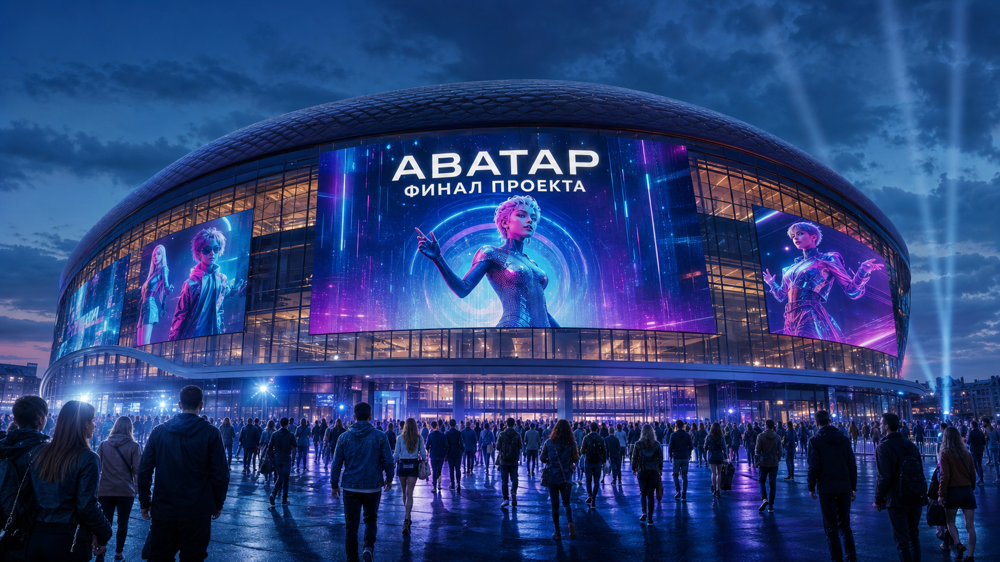
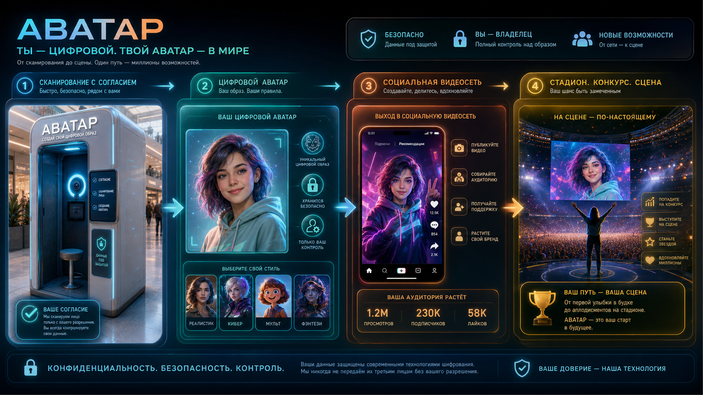
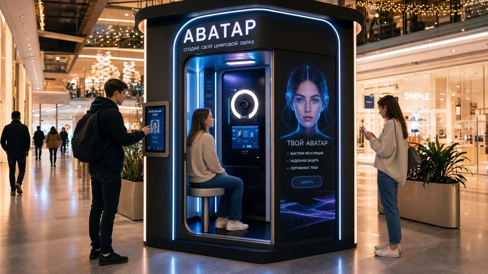
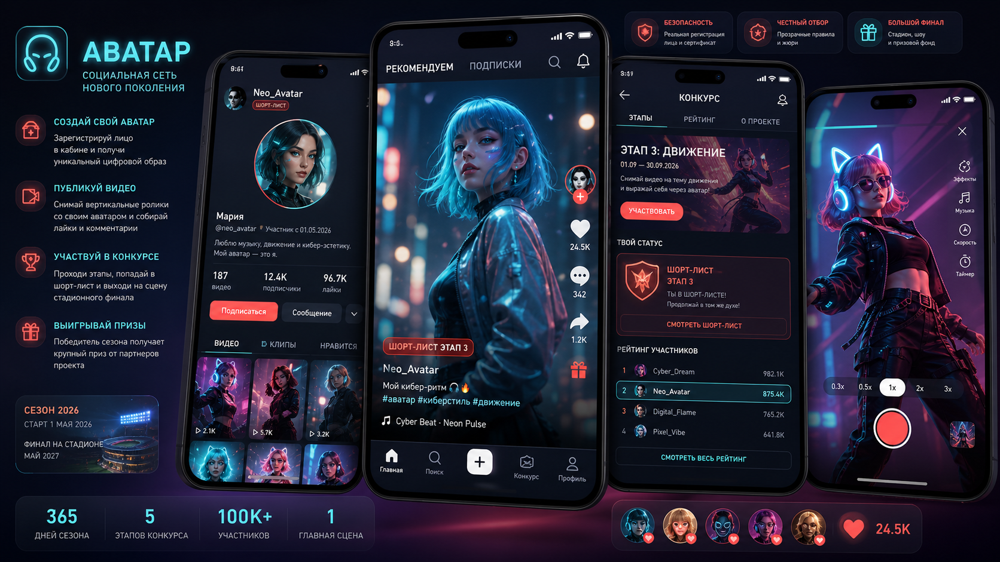

Кабинка в торговом центре, защищенная регистрация лица, социальная сеть аватаров, конкурс и финал на ВТБ Арене через год.
публичная точка входасертификатвидео-конкурсВТБ Арена
Видимая точка регистрации: человек понимает, где и зачем создается цифровой образ.
ID, QR, срок действия, scope использования, журнал действий.
Видео, рейтинги, shortlist, партнеры, финальное событие.
камера 4K, кольцевой свет, контроль бликов
качество кадров, liveness, повтор съемки
PDF/печать/QR, статус регистрации

Экран кабинки, личная страница участника, публичная лента, админ-журнал.
HTML/PWAQRПрофиль, сертификат, статусы согласия, журнал событий, роли команды.
APIDBГенерация образа, хранение материалов, модерация роликов, конкурсные подборки.
rendermoderationID: AV-2026-000001 · статус: активен · версия согласия: v0.1
Для биометрических персональных данных нужен отдельный, понятный контур согласия. В РФ базовая рамка — 152-ФЗ «О персональных данных», ст. 11.
Ссылка для рабочей проверки: consultant.ru/document/cons_doc_LAW_61801/
ID, дата/место регистрации, версия согласия, разрешенные сценарии, срок действия, QR-проверка, статус отзыва, ссылка на материалы съемки.

Вертикальные ролики, реакции, отметка сертификата, быстрый переход в профиль.
Раунды, рейтинг, shortlist, задания недели, дедлайны, модерация.
История роликов, сертификат, статус участника, комментарии команды.
Пилот кабинки, сценарий согласия, первый сертификат.
Соцсеть, профили, первые ролики и челленджи.
Раунды конкурса, рейтинг, модерация, shortlist.
Номера, партнерский блок, репетиции визуального шоу.
Финал, награждение, запуск следующего сезона.
ВТБ Арена: многофункциональный комплекс на Ленинградском проспекте, 36. Стадионный формат — до 33 тыс. зрителей.
Аватары на больших экранах, сцена, live-голосование, партнерские интеграции, награждение.
Референс площадки: vtb-arena.com/about/
Сергеон, Алексей, Игорь, Иван. Роли пока не назначаем публично.
Что сделано, что проверено, что не прошло, какие решения ждут встречи.
Комментарии участников сохраняются, чтобы не терять обратную связь по ссылке.
Картинки, сертификаты, схемы, ссылки, PDF и версии презентации.
Форма согласия, фото-набор, ID участника.
DoD: запись создана
PDF/QR, статус, список сертификатов.
DoD: QR открывается
Страница участника и первый аватар-ролик.
DoD: ролик виден
Раунд, оценка, shortlist, комментарий.
DoD: отбор сохранен
Журнал действий, баги, решения, следующий план.
DoD: evidence pack
Один человек проходит регистрацию, получает сертификат, видит профиль, публикует первый ролик, попадает в тестовый конкурсный этап, а команда получает журнал действий.
Отдельный экран согласия, версия текста, срок действия, отзыв участия.
152-ФЗст. 11Фото-набор, проверка качества, liveness, повтор съемки при сомнении.
quality gateРазделяем закрытые регистрационные данные и публичную страницу аватара.
scopeЕсли регистрация лица, сертификат и конкурсная механика сделаны аккуратно, финал на ВТБ Арене становится не фантазией, а логичным завершением сезона.
Организатор: ООО «__________»
Проект: «Аватар»
Почта: avatar@__________.ru
Телефон: +7 (___) ___-__-__
Материалы: презентация, PDF, список решений, журнал задач